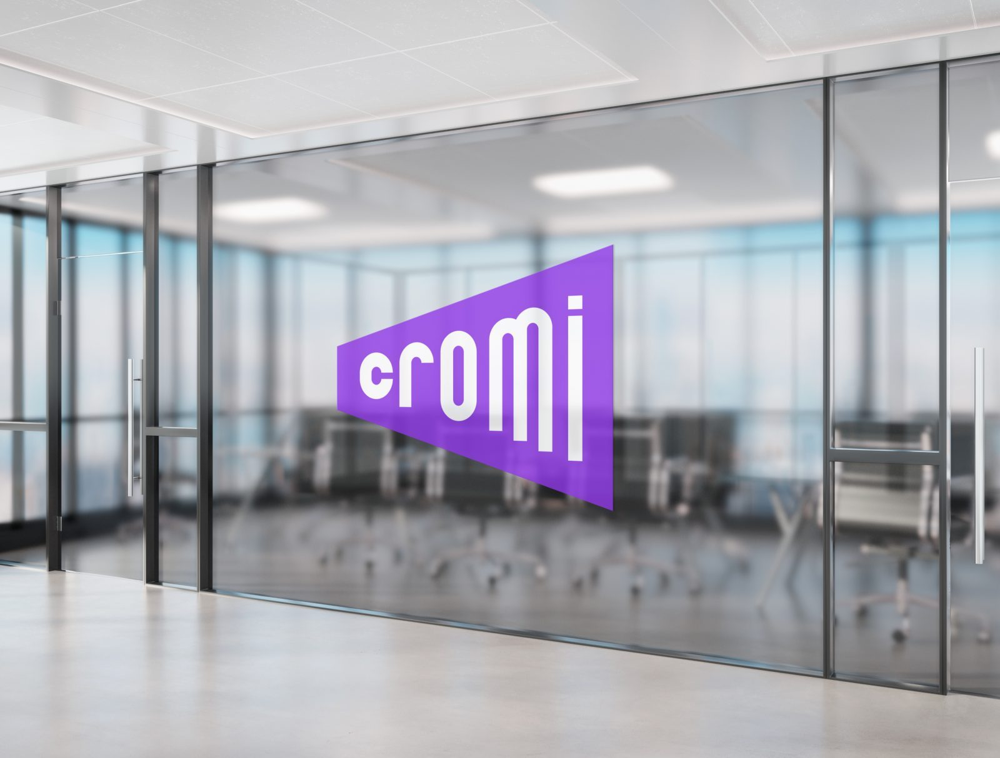
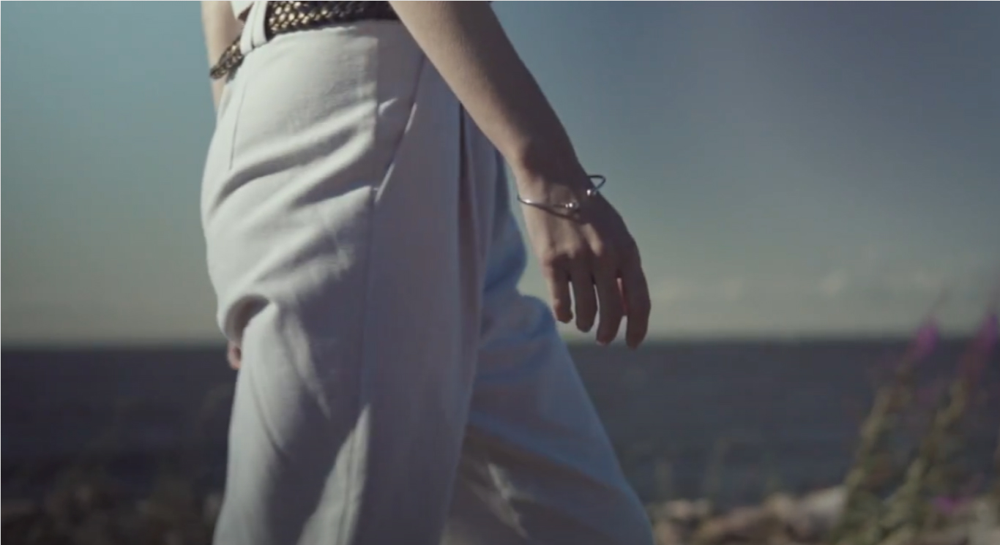
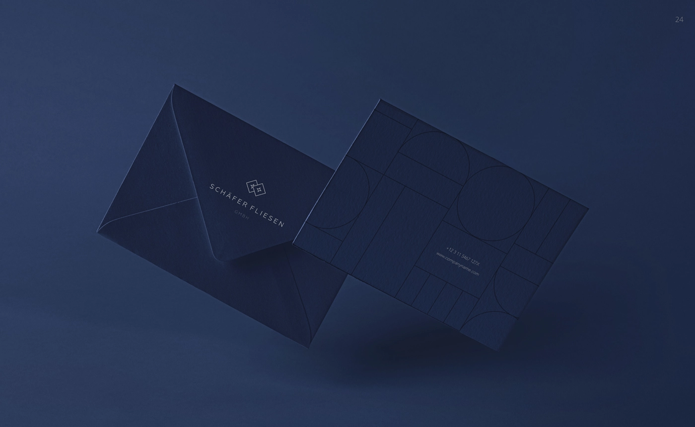

Архитектура с запасом на развитие
Масштабирование на новые ТЦ, интеграция с родственным центром, кабинет арендатора и программа лояльности к 2028 году — одно архитектурное требование.

Предложение по проектированию, дизайну и разработке digital‑платформы ТРЦ.
01 · Задача
Масштабирование на новые ТЦ, интеграция с родственным центром, кабинет арендатора и программа лояльности к 2028 году — одно архитектурное требование.
Посетитель, арендатор, пресса и соискатель приходят с разными задачами. Для каждого нужен собственный сценарий и точка входа.
До карточки магазина — не более 2–3 кликов. PageSpeed 85+ на мобильных. Рост органического трафика и заявок отдела аренды.
Почему сейчас
С 2019 года трафик ТЦ в России снизился с 486 до 356 посетителей в сутки на 1 000 м². В первом полугодии 2026 падение продолжилось: −2% год к году по стране.
К концу 2025 года Россия вошла в число стран с самой высокой долей онлайн‑торговли. Сайт должен помогать посетителю выбрать событие, сервис или другой повод для визита.
Вакантность в Москве выросла с 9,7% на конец 2025 года. Качество сайта влияет и на работу с арендаторами: он показывает возможности продвижения и уровень сервиса ТРЦ.
Fashion сжимается: доля одежды снизилась с 38% до 35%, покупки одежды и обуви — на 10%. Еда, развлечения и фитнес заняли 17,5% площадей, прибавив 3 п.п.
Поиск по бренду, этаж и маршрут до магазина — сквозной сценарий, а не спрятанный пункт меню.
Визиты из AI‑ассистентов выросли на 70% за год. SSR и Schema.org помогают попадать в ответы со ссылками на источники.
02 · Наш взгляд
Макет демонстрирует принцип организации интерфейса. Визуальное решение будет разработано и согласовано на этапе дизайн‑концепции.

Афиша и даты — сразу на главной.
Актуальные предложения из CMS.
Московское ш., 21 · Рязань
Афиша, дата и одно ясное действие вместо карусели баннеров.
До карточки магазина — не больше двух кликов с любой страницы.
Арендаторы, события и сервисы собираются на одном модуле.
Референсы рынка
Destination на первом экране, ближайшие события и сценарии Shop / Eat & Drink / See & Do.
60 центров на одной платформе: выбор объекта, приложение и архитектура под сеть.
Режим работы, адрес, схема ТРЦ и маршрут вынесены на главную.
Навигация по сценариям, каталог с фильтрами, кино и программа лояльности.
Используем применимые продуктовые решения:
событийную главную, сквозную навигацию и архитектуру под сеть.
03 · Визуальная система
Заголовок несёт настроение и заменяет декоративную графику.
Ежедневно
Одежда и обувь · 2 этаж
10:00 — 22:00Текст · touch target
Типографика Один гротеск с полной кириллицей; заголовки 56–72 px, основной текст 18 px, на мобильных минимум 16 px.
Цвет Палитра бренда плюс нейтральная база; контраст текста от 4,5:1, у крупных заголовков — 3:1.
Сетка 12 колонок на desktop, 8 на tablet, 4 на mobile; шаг отступов кратен 8 px.
Доступность Фокус на интерактивных элементах, touch targets от 44×44 px и обязательный reduced motion.
Технический разбор
Техническое задание подробно проработано. Ниже — четыре вопроса, которые важно согласовать до начала работ.
Приоритет LCP, постер вместо автозапуска, AVIF/WebP, CDN и жёсткий бюджет скриптов. Показатели фиксируем отдельно для mobile и desktop.
Нужны формат планировок, правила привязки арендаторов и регламент обновления. Закладываем SVG‑слои и связь с каталогом через CMS.
Доступность определяет контраст, размеры, фокус и поведение анимаций. Проверяем на дизайн‑концепции, не в конце вёрстки.
Срок реален при поблочном согласовании и зафиксированном графике передачи данных, планировок и фотоконтента.
04 · Подход Serenity
Блоки идут параллельно: фронтенд начинается после утверждения дизайн‑концепции, не дожидаясь оформления всех страниц.
Бриф, аудит бизнеса и аудитории, конкуренты, позиционирование, Tone of Voice, структура, пользовательские пути, прототипы и техническое задание.
Интервьюирование, чистовой контент, семантическое ядро, метатеги, коммерческие факторы, SSR/SSG, URL, sitemap, Schema.org и подготовка к индексации.
Мудборд, дизайн‑концепция, адаптивные интерфейсы, UI‑kit, состояния, руководство по анимациям и проверка доступности.
Компонентный фронтенд, логика CMS, API, интеграции, поиск, формы, каталоги, события, сервисные разделы и управление контентом.
Кроссбраузерная проверка, оптимизация производительности, тестовый стенд, развёртывание, документация, обучение, перенос и месяц поддержки после запуска.
Архитектура
Кастомная админка под объект, этажи, арендаторов, события и услуги. API без лицензионных платежей; решение дороже на старте и требует поддержки разработчика.
Привычная среда для маркетинга и SMM, быстрый старт и широкий рынок поддержки. Нужна строгая дисциплина плагинов.
Российский вендор, права доступа и история изменений. В headless‑режиме Битрикс отдаёт данные по REST, а Next.js отвечает за пользовательский интерфейс.
05 · Состав работ и стоимость
67 рабочих дней — суммарная трудоёмкость специалистов.
Этапы частично идут параллельно; календарный срок — около трёх месяцев.
Без учёта опций и отдельных оценок.
Анализ конкурентов; позиционирование, Tone of Voice и контентная структура; тексты главной, разделов «Арендаторы», «Еда», «События / Акции / Новости», «Как добраться / Парковка», «Услуги ТЦ», «Для арендаторов», «Для прессы / партнёров», контактов и информационных разделов; финальная редактура.
Семантическое ядро и исследование до 10 конкурентов; SSR/SSG, ЧПУ, robots.txt и sitemap.xml; meta title, description, Open Graph, canonical; Schema.org; WebP/AVIF, lazy loading и оптимизация шрифтов, изображений и скриптов; подготовка к индексации.
UX/UI в коде и интерактивные HTML‑прототипы; Next.js / React / TypeScript; общие компоненты, шаблоны, навигация, каталог с фильтрами, карточки, новости, акции, события, поиск, формы и сервисные разделы; mobile‑first; интеграция с CMS/API; состояния загрузки и ошибок; Next/Image; кроссбраузерное тестирование.
Тестовый стенд; логика CMS; API для Next.js; конфигурация сервера и базовая безопасность; GitHub; документация по развёртыванию и API, руководство администратора; перенос проекта.
В течение пяти рабочих дней после договора. Срок начинается после оплаты и передачи исходных материалов.
По факту приёмки: исходники проекта, документация по API и развёртыванию, руководство администратора и комплект доступов.
06 · Кейсы

Сайт для дистрибьютора звукового оборудования.
Смотреть кейс ↗
Интернет‑магазин для бренда ювелирных украшений.
Смотреть кейс ↗
Интернет‑магазин мебели.
Смотреть кейс ↗
Сайт‑каталог дистрибьютора испанской плитки в Германии.
Смотреть кейс ↗Доверие
Фиксируем цели проекта, работаем совместно с командой клиента и принимаем решения по результату.
Нас отмечает индустрия
Разработка бренд‑стратегий в России
Digital‑маркетинг для e‑commerce · DarkRain
Самые награждаемые агентства по маркетингу · Санкт‑Петербург
Самые награждаемые агентства по маркетингу
Самые награждаемые маркетинговые агентства
Разработчики сайтов на Tilda
Техническая поддержка веб‑проектов
Разработчики сайтов в России
Корпоративные digital‑решения · Санкт‑Петербург
Брендинговые агентства · Санкт‑Петербург
Брендинговые агентства России
Разработчики лендингов в России
Брендинг для промышленных предприятий
Цифровая трансформация бизнеса
Serenity × Премьер
На встрече уточним требования к карте ТЦ, CMS, материалам и графику запуска.
Обсудить проект 1место
1место